Ten years of warfare, countless heroes killed, and Troy laid to waste !!
The marriage of Peleus, grandson of Zeus (King), to Thetis, daughter of the sea god Nereus, was a major event on Mount Olympus. The happy couple invited every major and minor deity to the ceremony, with the understandable exception of Eris, the goddess of discord. Furious at the slight, Eris appeared anyway, bringing with her a beautiful golden apple inscribed “To the fairest”. Hera (Queen, mother), Aphrodite (goddess of love), and Athena (goddess of wisdom) immediately fell into a bitter argument as to which of them deserved the apple, an argument that would lead to the famous Trojan War.
Judgement of Paris: The Event that Triggered the Trojan War 🍎👑💘
When none of the gods dared to make the decision, they went to Paris, prince of Troy, and asked him to judge. To better their chances, each goddess offered Paris a further reward. Hera offered great power and Athena offered wisdom and prowess in battle. But Aphrodite offered marriage to the most beautiful woman in the world. Paris chose Aphrodite. Unfortunately, that woman, Helen, was already married to Menelaus of Sparta. When Paris stole away with the lovely Helen, Menelaus raised a great army of Greeks and settled into a long siege of Troy, known today as the Trojan War.
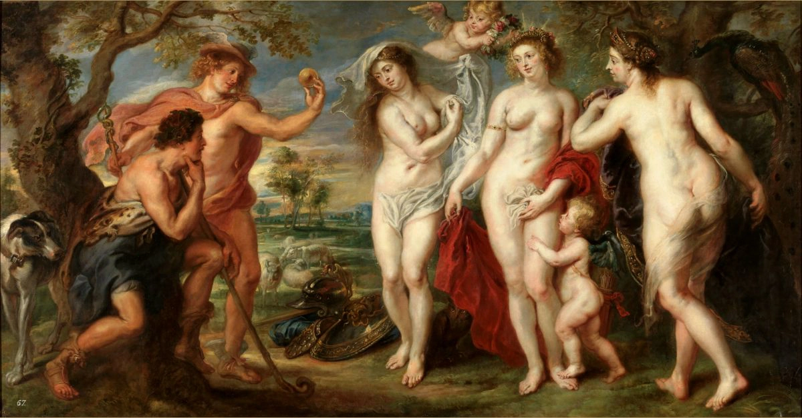
The Crisis: Agamemnon Refuses Chryses' Plea 😠🏹🦠
Homer’s great epic, the Iliad, picks up in the final year of the great Trojan War. The besieging Greeks returned from a raiding party with spoils and captured women. The brother of Menelaus, Agamemnon, brought back the beautiful Chryseis daughter of Chryses, chief priest of Apollo. After Agamemnon roughly dismissed Chryses’ pleas for his daughter’s safe return, Apollo himself brought a plague against the Greeks.
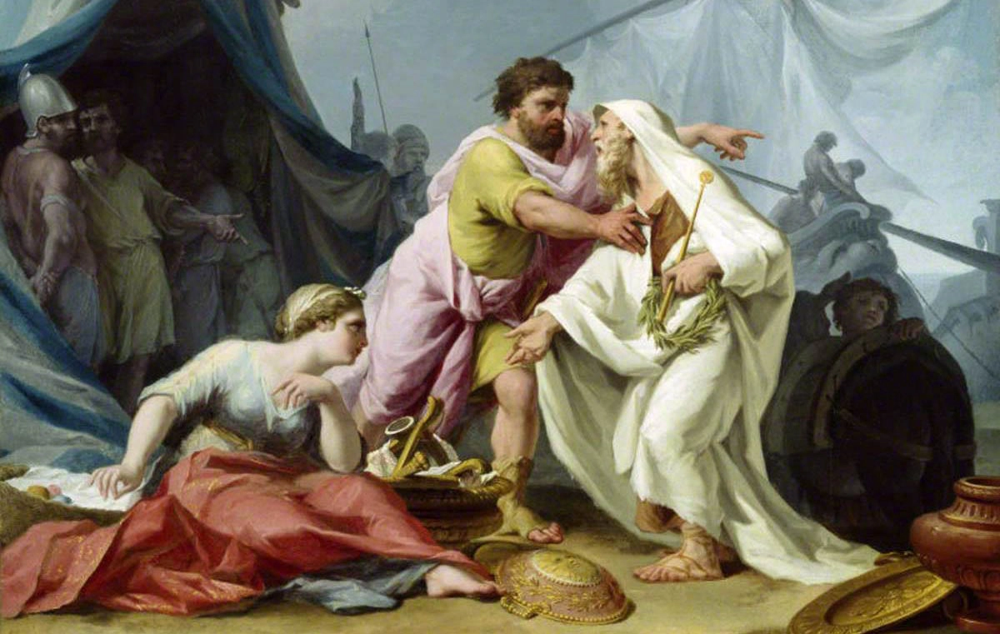
Agamemnon Takes Bryseis 💔😭⛺
Pressured by his men, in particular Achilles, leader of the Myrmidons, Agamemnon reluctantly agreed to return the girl. However, he spitefully insisted on taking Achilles’ captive woman, Briseis, as compensation. Slighted and irritated, Achilles withdrew his soldiers and resolved not to join in the fight again until the Greeks came crawling back to him, acknowledging how badly they needed him. He even asked his mother to plead with Zeus to ensure it.
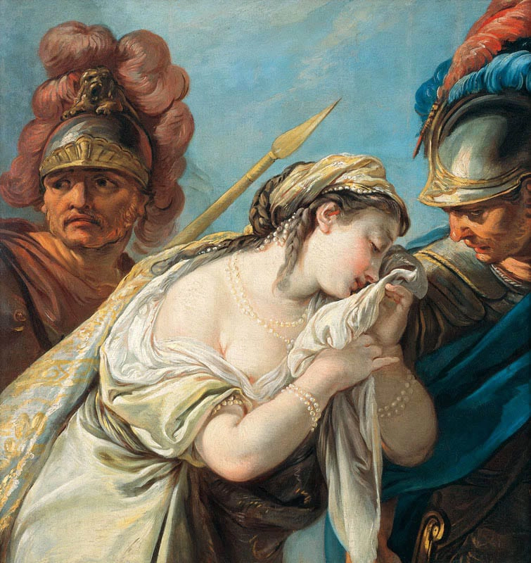
The War Rages On 🔥🐎🗣️
Despite Achilles remaining sulking in his tent, the Trojan War continued unabated. Both armies deployed on the plain in front of Troy. Yet before the fighting was joined, Paris, goaded on by the disgust of his older brother Hector (who shamed Paris for his cowardice after having caused the war), offered to fight Menelaus in single combat to determine the outcome of the Trojan War and save the loss of more lives. Menelaus quickly gained the upper hand and would have dispatched the young prince. However, Aphrodite interfered and spirited Paris away back to his chambers. Meanwhile, a Trojan soldier broke the truce by shooting Menelaus with an arrow, and the battle joined in earnest.
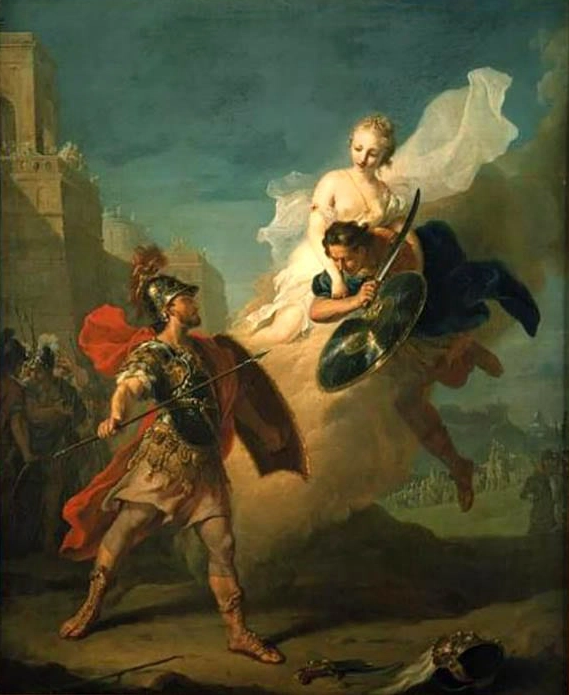
Diomedes Injures a Goddess! 💥🩸✨
The advantage swung quickly between the two sides, as the gods and goddesses of Olympus chose their sides and joined in the fighting. Eventually, Athena, goddess of war, set the great Greek hero Diomedes in a berserk rage that devastated the Trojan forces.
To further aid her favorite champion, Athena lifted the divine mist from Diomedes' eyes, giving him the unique power to distinguish gods from mortals on the battlefield. She explicitly instructed him to avoid fighting any immortal god—except for one: Aphrodite, whom he was told to wound with his spear. Following this divine command, Diomedes even injured Aphrodite as she tried to protect her wounded mortal son, Aeneas. Apollo managed to save Aeneas, but the sight of a god being harmed by a mortal was a grave matter, so Zeus called back all of the gods and goddesses and forbid them from continuing to fight.
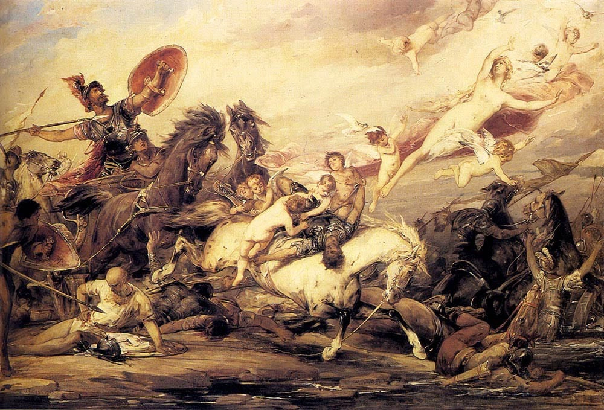
Hector Fights Ajax 🛡️⚔️🤝
In another attempt to end the Trojan War by single combat, Hector challenged any Greek hero to face him. He fought a hard duel with Ajax, but the combat was called off due to the coming night. The two warriors exchanged gifts as a sign of respect for each other's valor before parting ways. Hector gave Ajax a sword, and Ajax gave Hector a purple belt.
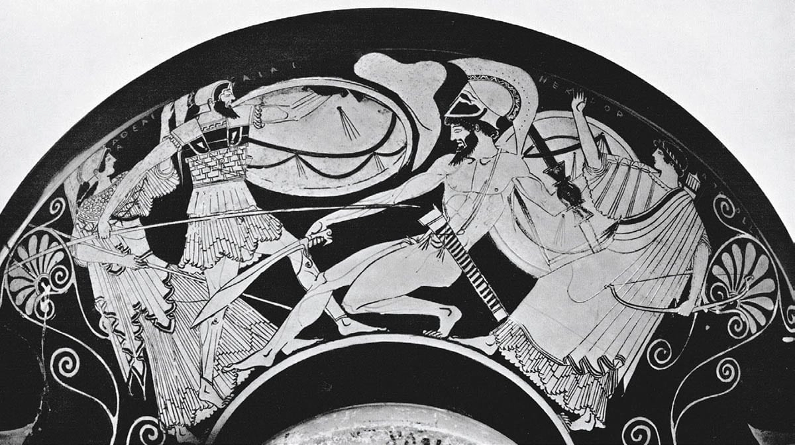
Battle for the Greek Ships 🚢🌊🔥
The next morning, Zeus undertook to ensure the promise he had made to Thetis. This promise was the result of Achilles' mother Thetis pleading with Zeus to grant the Trojans, and specifically her ally Zeus's favorite Trojan, Hector, success in battle. The purpose was to make the Greeks desperate enough to fully realize how badly they needed Achilles and beg for his return.
Zeus already held great affection for Hector. Now he fought at his side, sending Hector cutting through the Greek forces and driving them all the way back to their ships on the shoreline. The desperate Greeks appealed to Achilles, but still too angry, he refused to join the battle. As more Greek heroes took wounds, and the fighting raged closer and closer to the ships, Achilles’ closest friend Patroclus could no longer stand to remain out of the fight. He begged Achilles to allow him to join the battle, and Achilles finally agreed. He lent Patroclus his armor and warned him against pursuing the Trojans away from the ships towards Troy.
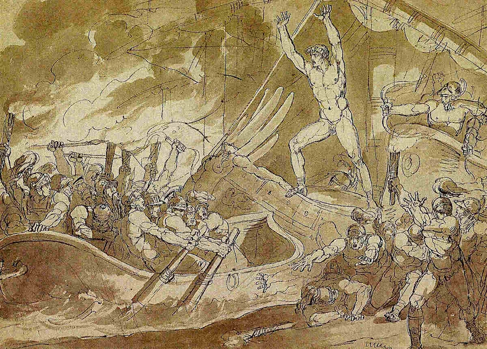
Patroclus Dies ⚰️😔💀
Leading the Myrmidons, Patroclus’s sudden arrival did manage to push back the Trojans. Unfortunately, he ignored Achilles’ warning and chased the routing enemy back towards the walls of Troy. Before he reached the gates, the god Apollo struck him from behind, knocking off his helmet and armor and stunning him. Next, a minor Trojan hero wounded him with a spear. At the gates of Troy, Hector, taking advantage of Patroclus's weakened state, finally managed to rally the Trojans and stand their ground. In a fierce encounter, he killed Patroclus and stripped Achilles’ armor from the body. However, the Greeks managed to push the Trojans back long enough to recover the body itself, and they sorrowfully returned it to Achilles.
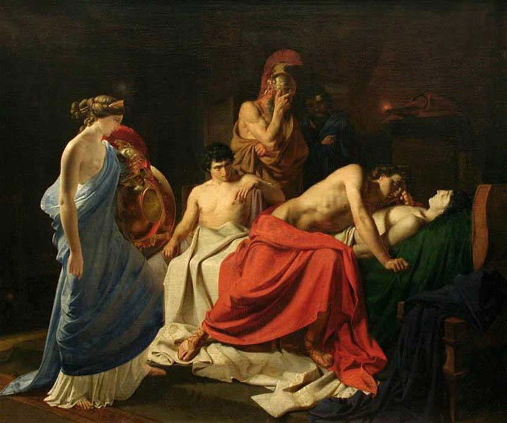
The Wrath of Achilles 😡🔥🛡️
In a spiral of grief and rage over the death of his friend Patroclus, Achilles was finally prepared to re-enter the Trojan War, swearing vengeance on Hector. With Achilles now returned, Zeus once again permitted the gods to support their chosen allies, unleashing chaos upon the battle. Thetis immediately went to Hephaestus, the smith of the gods, and asked him to forge new armor for Achilles, as his previous set was lost to the Trojans on the battlefield. Hephaestus crafted a magnificent set, including a great shield depicting the entire cosmos and the life of man.
Despite prophecies warning of his death, Achilles determinedly headed to the battlefield, clad in his new armor and carrying his great shield. With Achilles at their head, the Greeks now plowed through their enemy, slaughtering Trojan warriors as they ran back towards the city gates. Apollo interfered long enough to allow the surviving Trojans to escape and seek shelter within the walls, but Hector remained outside.
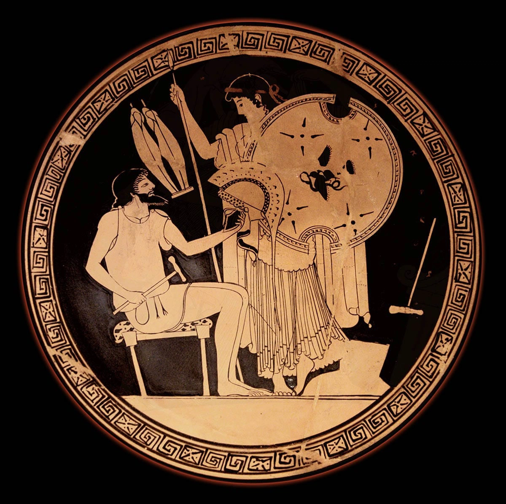
The Death of Hector 🗡️😭🛡️
Like Achilles, Hector had also heard prophecies of his own impending death. However, ashamed at the rout of his army and determined to continue the defense of Troy, he stayed on the field to face Achilles. As the raging hero came at him, however, his nerves failed, and he initially fled around the city.
During the chase, Athena appeared to Hector disguised as his favorite brother, Deiphobus, and convinced him that they would fight Achilles together. Believing he had his brother's aid, Hector finally regained his courage to engage with Achilles, only to find that he was alone. The enraged Achilles soon dispatched Hector, stabbing him through the neck.
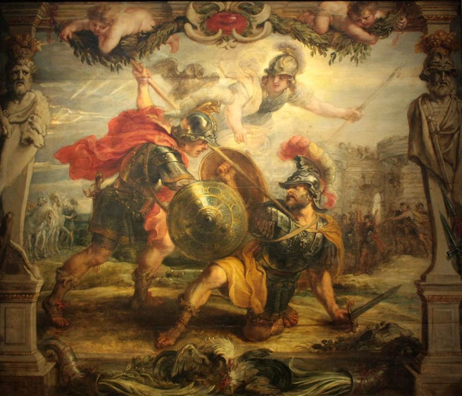
The Triumph of Achilles 🚜⛓️😢
Yet even Hector’s painful death was not enough to appease Achilles’ enflamed grief. To the horror of the Trojans, watching from the walls, the Greek soldiers gathered around the body, piercing it repeatedly with their swords and spears as Achilles stripped Hector. Then, he fastened the body by slits in the ankles to his chariot, and drove at full speed around the city, dragging Hector ignobly in the dust. Though Achilles continued this desecration for twelve days, the gods, especially Apollo, took pity on Hector and preserved his body from decay and mutilation. It was an unheard-of dishonor in the Classical world.
Hector’s mother tore her hair with a loud cry as she looked upon her son. His father made a piteous moan, and throughout the city the people fell to weeping and wailing. Hardly could the people hold Priam back in his hot haste to rush without the gates of the city. He groveled in the mire and besought them, calling each one of them by his name.
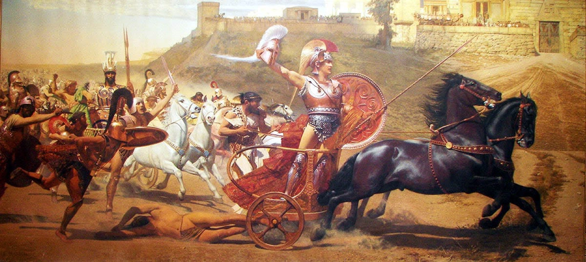
Priam Begs Achilles 👑🙏🤝
In preparation for his dangerous journey, Priam loaded a wagon with immense treasures, including twelve magnificent robes, twelve simple cloaks, and ten gold talents, as a ransom for his son's body.
‘Let be, my friends,’ he cried, ‘and for all your sorrow, suffer me to go single-handed to the ships of the Achaeans. Let me beseech this cruel and terrible man, if maybe he will respect the feeling of his fellow-men, and have compassion on my old age.’” This mistreatment of Hector’s body even horrified the gods, and Zeus sent Hermes to guide Priam safely through the Greek lines to the tent of Achilles. There, Priam, falling on his knees before Achilles and kissing his hand, pleaded for the return of his son’s body. Moved to tears himself, Achilles wept with Priam and finally agreed to surrender the body for burial honors.
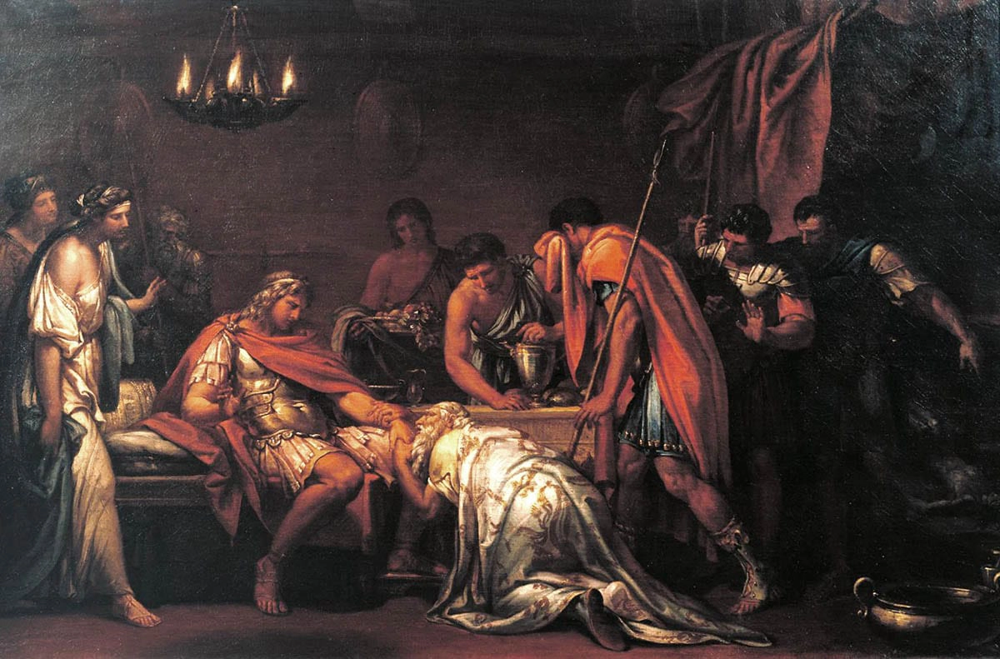
The End of Achilles ⚰️🏹💔
It is here, at the funeral of Hector, that The Iliad completes its tale, yet the story of the Trojan War, as many will know, was still not over. The battle rejoined the next day, and Achilles killed numerous heroes of the Trojan lines, including the Amazon Queen Penthesilea and the Ethiopian King Memnon. Many of those heroes were descendants of the gods, products of liaisons with mortal lovers.
Eventually, all the gods concluded that Achilles had killed too many of their children. Apollo guided the hand of Paris, who shot Achilles in the heel with a poisoned arrow. This was the only vulnerable spot on Achilles' body, as his mother, Thetis, had dipped him into the River Styx as a child, holding him by that heel. Paris himself would fall to an arrow not long after, and soon, a final assault ended the war.
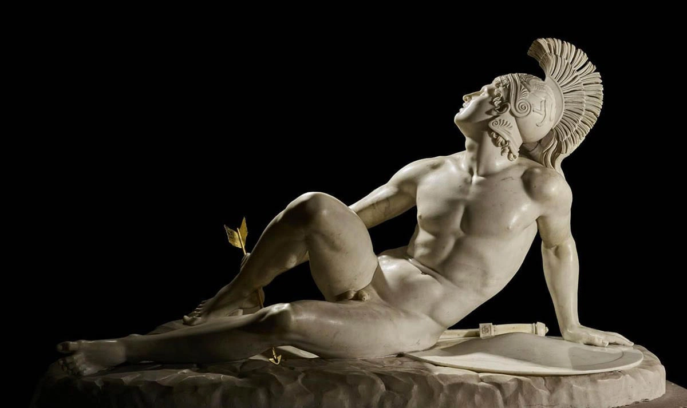
The Trojan Horse 🐴🤫🪵
Aided by the cunning of Athena, Odysseus devised a plan to build a giant wooden horse. Hollowed out on the inside, it concealed Greek warriors. They left it before the gates of Troy with the inscription "the Greeks dedicate this offering to Athena in supplication for their safe return home". To complete the ruse, the Greeks sailed their ships around a headland, out of sight of the city walls.
Although many Trojans were suspicious of the gift—especially the priest Laocoön, who famously cried out, "I fear the Greeks, even when bearing gifts!" — a Greek spy named Sinon managed to infiltrate and convinced them to keep the horse. When night fell, the Greek soldiers lept from the horse and opened the gates of Troy to their waiting comrades.
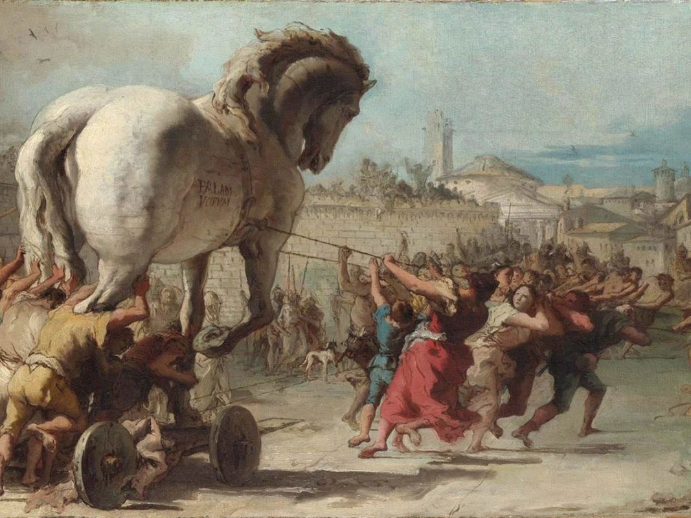
The Fall of Troy 💣💥🌃
The ensuing slaughter continued throughout the night and into the next day. Although the Trojans fought desperately, they were overrun and could do nothing to stop the onslaught. The city was systematically pillaged and burned, marking the end of the ten-year siege.
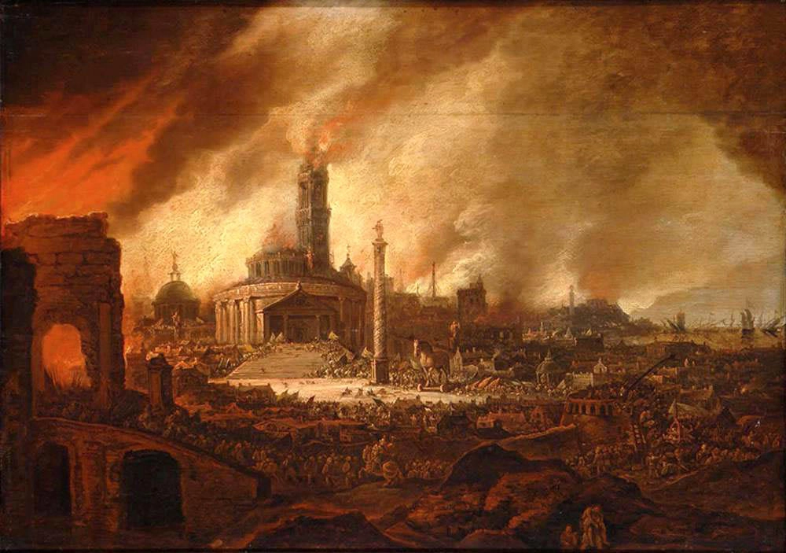
Death of Priam 💀🩸🏛️
The Greeks showed no mercy to the Trojan royal family. Neoptolemus, the son of Achilles, brutally killed King Priam at the altar of Zeus, violating a sacred space. His wife Hecuba and daughter Cassandra were taken captive, and in a particularly cruel act, Hector’s infant son, Astyanax, was flung from the walls of the city to ensure no future heir could avenge Troy. With their leaders dead or captured, the leaderless Trojans either fled or fell.
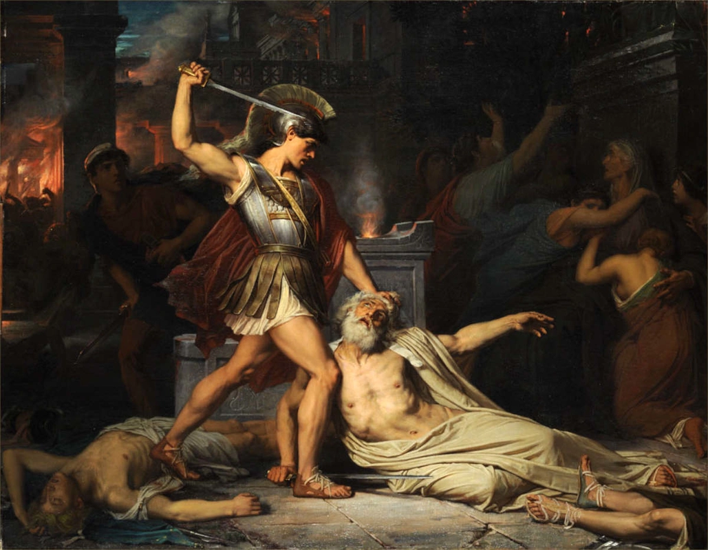
The Trojan War Ends, Aeneas Escapes 🚢🇮🇹🗺️
Menelaus found Helen and, after nearly killing her in his rage, chose to forgive her and took her back with him to Sparta. One of the few survivors of Troy was the hero Aeneas. He escaped with his father, his son, and a group of men and women who would eventually cross the Mediterranean to found Rome, but that would be the story for another epic, the Aeneid.
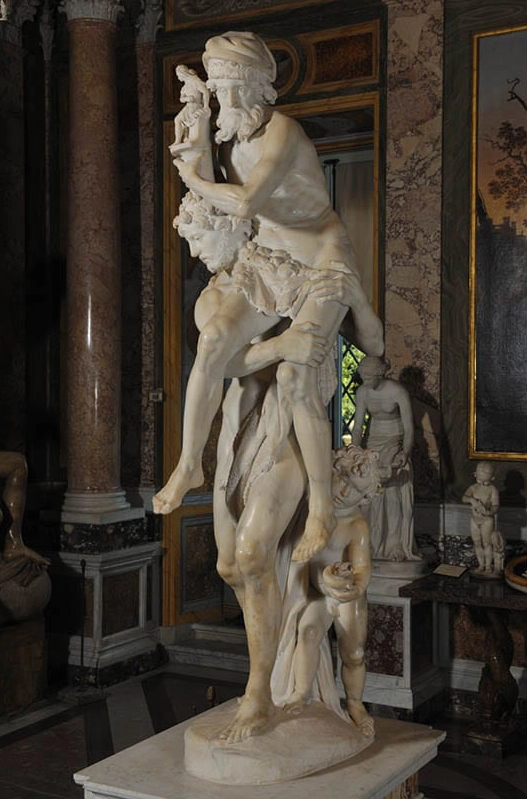
🌟 Supernatural Links and Prophecies ✨🔮🌩️
The war was largely orchestrated by the gods, and major events were determined by fate.
The Original Sin: Eris's Apple The entire conflict began with a supernatural oversight: the goddess of discord, Eris, was deliberately excluded from a wedding. In revenge, she tossed the Golden Apple inscribed "To the Fairest," forcing Paris to judge between three goddesses (Hera, Aphrodite, and Athena), which led to the abduction of Helen.
The Sacrifice at Aulis: The Greek fleet was initially unable to sail due to a windless sea, a punishment sent by the goddess Artemis. To appease her, the great commander Agamemnon was forced to sacrifice his own daughter, Iphigenia, to secure favorable winds.
Divine Immortality and Vulnerability Achilles was made nearly immortal when his mother, Thetis, dipped him into the River Styx, a river of the Underworld. She held him by the heel, leaving that spot as his only vulnerable point, which ultimately became his downfall (the origin of the term "Achilles' heel").
The Warning of Laocoön When the Trojans considered bringing the Horse into the city, the priest Laocoön warned them vehemently ("I fear the Greeks, even when bearing gifts!"). As a punishment from the gods who favored the Greeks, two giant sea serpents emerged from the sea and strangled Laocoön and his two sons, convincing the Trojans that the horse was a sacred offering.
💡 Interesting & Historical Facts 🏛️📜🔎
The Missing Years: The Iliad, Homer's epic that is the primary source of the war, only covers about 50 days in the tenth and final year of the actual ten-year siege.
The Founding of Rome: The Trojan hero Aeneas was one of the few high-ranking Trojans to survive the fall of the city. He carried his father, Anchises, on his back and led survivors to Italy, where his descendants eventually founded Rome. His story is the subject of the Roman epic, The Aeneid, written by the poet Virgil.
The Madness of Odysseus: When the Greek forces were first assembling, the hero Odysseus did not want to leave his family. To avoid the draft, he pretended to be insane by plowing his fields and sowing salt instead of seed. His ruse was exposed when an officer placed his infant son, Telemachus, in the path of the plow, and Odysseus swerved to avoid him.
Archaeological Evidence: While the story is mythical, a site believed to be the ancient city of Troy (Hisarlik in modern Turkey) has been extensively excavated. The multiple layers of ruins show evidence of destruction by fire and warfare, suggesting a historical basis for a prolonged conflict.